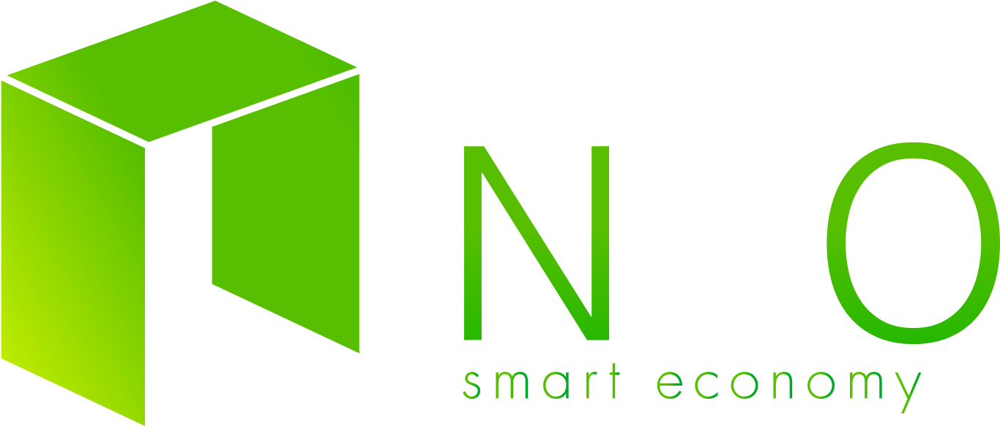

<nav class="navbar navbar-expand-lg navbar-dark" style="background: rgba(32,48,63, 0.7);">
  <a class="navbar-brand" style="margin-left:calc(20px + 1vw);">
    
  </a>

  <button class="navbar-toggler" type="button"  style="margin-right:calc(20px + 1vw);"
          (click)="toggleNavbar()">
    <span class="navbar-toggler-icon"></span>
  </button>


  <div class="collapse navbar-collapse "
       [ngClass]="{ 'show': navbarOpen }" >
    <ul class="navbar-nav mr-auto">
  
    </ul>

    <ul class="navbar-nav" style="margin-left:calc(20px + 1vw); margin-right:calc(20px + 1vw);">
          <li class="nav-item">
            <a class="nav-link nav_link" (click)="routeToToS()">Agreement</a>
          </li>

          <li class="nav-item">
            <a class="nav-link nav_link" href="https://medium.com/@neospcc">Monitoring</a>
          </li>
    
          <li class="nav-item">
            <a class="nav-link nav_link" href="https://medium.com/@neospcc">Blog</a>
          </li> 
    </ul>
  </div>
</nav>

<!-- 

  <button class="coc" (click)="routeToToS()">Agreement</button>
  <button class="blog" (click)="routeMedium()">Blog</button>
-->
  <div class="line"></div>

